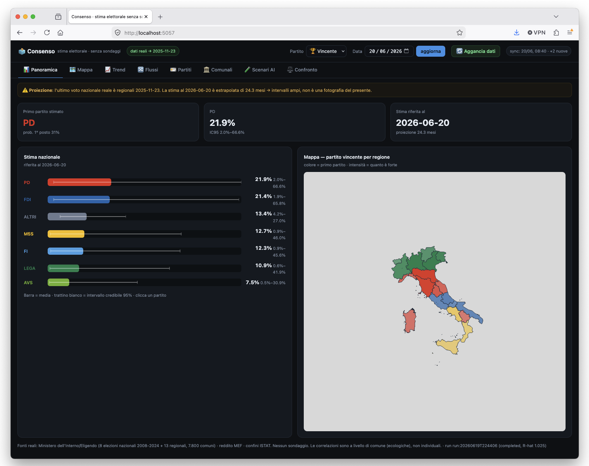
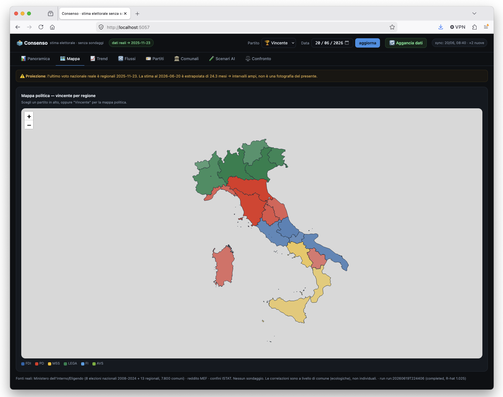
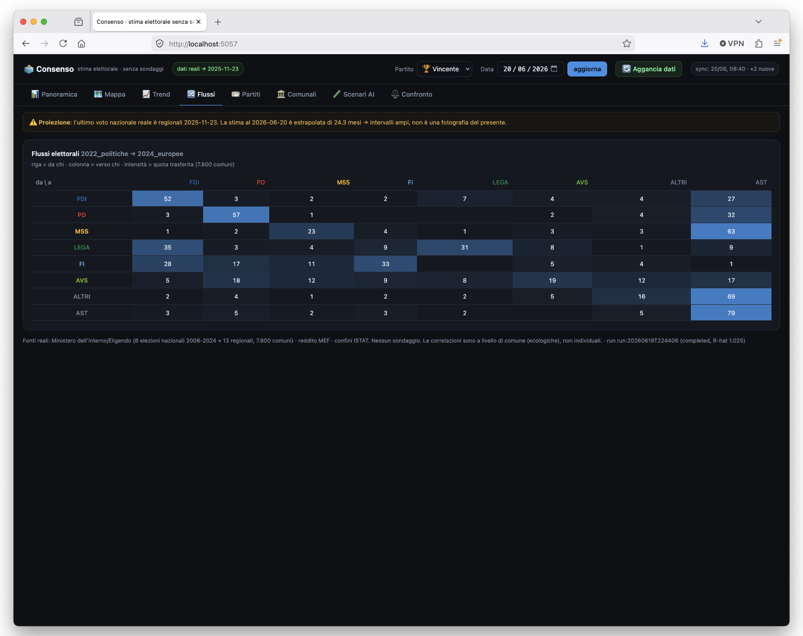
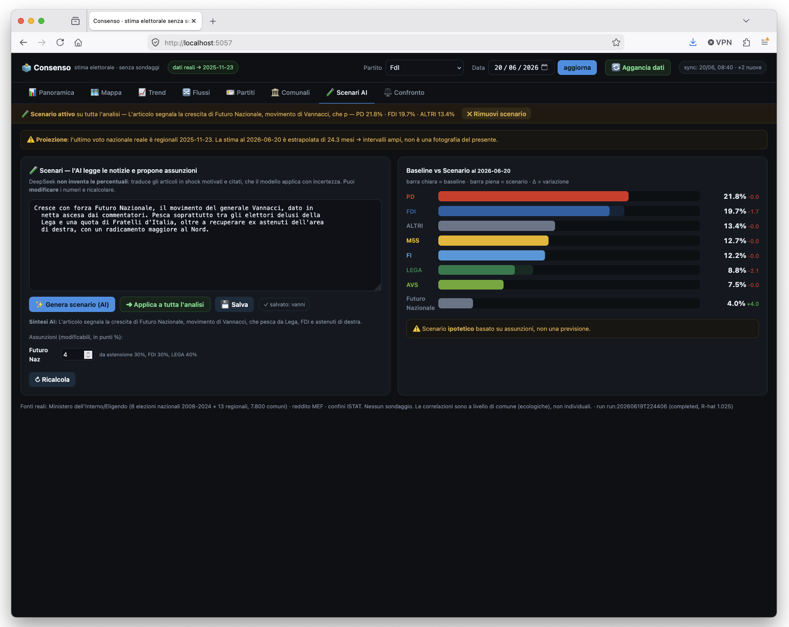

// La Domanda Di Un Amico
Sezione 00. La domanda giusta arriva da dove non te l'aspettiIeri parlavo su X con un amico, Stefano Morandi. Si parlava di sondaggi, di affidabilita', del solito teatrino delle percentuali. Di politica spesso la pensiamo diversamente, ma sempre da amici e con rispetto. E a un certo punto, invece di rilanciare, e' arrivata questa:
"Ma da matematico, secondo te, esiste un sistema alternativo ai sondaggi per capire, non so, con gli storici, a quanto sono piu' verosimilmente i partiti? Dovresti fare un modello che sfrutta Eligendo, anche se mi rendo conto che le tornate elettorali sono troppo sfalsate tra loro per essere affidabili." @SteMorandi1990, 19 giugno 2026
Mi e' piaciuta perche' e' la domanda giusta. Non "chi vince", ma "esiste un modo di misurare il consenso senza chiedere alla gente cosa votera'". E perche' aveva gia' messo a fuoco il punto tecnico su cui si gioca tutto: le elezioni sono di tipo diverso e distanziate nel tempo. Il mestiere del modello e' esattamente questo, trasformare quella difficolta' in qualcosa di misurabile.
La scommessa. Un sondaggio chiede a un campione un'intenzione. Un'elezione, invece, e' una cosa che e' successa davvero: milioni di schede contate. Se i sondaggi sono opinioni su un campione, le elezioni sono misure su tutta la popolazione. Il problema e' che ogni elezione misura una cosa leggermente diversa. Il mestiere e' tutto qui: separare il segnale dalla deformazione.
// L'Elezione Come Misura Sporca
Sezione 01. Lo stato latenteL'idea di fondo la rubo allo stesso linguaggio che si usa per i GPS e per i filtri di Kalman. Esiste una grandezza che non vedo direttamente, chiamiamola consenso vero di un partito in un certo momento, θ_t. Non la osservo mai. Quello che osservo sono le elezioni, e ogni elezione e' una misura distorta di quello stato, vista attraverso una lente che deforma:
- le europee non si votano come le politiche (l'elettorato si muove, l'affluenza cambia);
- le regionali premiano i radicamenti locali e le liste civiche;
- l'affluenza gonfia o sgonfia certi partiti piu' di altri;
- alcuni partiti sono forti dove altri spariscono.
Il modello non cerca di indovinare la prossima elezione. Cerca di stimare θ_t oggi, togliendo dalle elezioni passate la loro deformazione specifica. E' un State Space Model bayesiano gerarchico: lo stato evolve nel tempo, le elezioni lo "fotografano" con un errore noto.
In parole: lo stato di oggi e' quello di ieri piu' un piccolo scostamento casuale (random walk, tanto piu' grande quanto piu' tempo e' passato). Quando arriva un'elezione, quella misura lo stato piu' un bias di tipo (β: quanto un partito sovra/sotto-rende a quel tipo di elezione) piu' un effetto affluenza. Le politiche fanno da ancora: il loro bias e' fissato a zero, sono loro a definire la scala del "consenso nazionale". Lavoro in log-ratio (poi softmax), cosi' le quote sommano sempre a 1 e restano tra 0 e 1 senza forzature. L'inferenza gira con NUTS (Hamiltonian Monte Carlo).

La stima non e' un numero secco: ogni partito ha media e intervallo credibile al 95%. A destra, la stessa stima ribaltata sulla geografia.
Perche' bayesiano e non un machine learning qualunque? Perche' la domanda di Morandi non chiede un numero, chiede quanto e' verosimile. Un random forest ti sputa "7,3%" con finta sicurezza. Un modello bayesiano ti dice "tra il 6 e l'8 con il 95% di probabilita'", e quando non sa, te lo dice allargando l'intervallo. Su poche elezioni distanziate nel tempo, la cosa onesta e' proprio mostrare l'incertezza, non nasconderla.
// Il Paradosso Che Morandi Aveva Gia' Visto
Sezione 02. Lega al 7% nazionale, 38% in VenetoNello stesso scambio, poche ore prima, mi aveva fatto l'osservazione piu' tagliente di tutte:
"Come spieghi un dato nazionale Lega al 7% se alle amministrative in Abruzzo si veleggia al 10, alle regionali in Calabria al 9 e in Veneto si fa il 38? Un dato nazionale al 7% implicherebbe che la Lega in Lombardia sia sotto il 3%. E' impossibile." @SteMorandi1990, 19 giugno 2026
Questa e' esattamente la ragione per cui un modello serio deve essere gerarchico e per cui un modello ingenuo si schianta. Il consenso non e' un numero unico: vive su piu' livelli (sezione, comune, provincia, regione, nazione) e ogni livello informa gli altri. Una regionale fortissima in Veneto non e' la prova che il dato nazionale sia sbagliato: e' la prova che esiste un offset regionale enorme, che il modello deve stimare e tenere separato dal livello nazionale.
E qui arriva la conferma piu' bella che potessi avere: ho preso io stesso la trappola che lui aveva descritto. A un certo punto ho provato ad ancorare la stima nazionale "di oggi" alle regionali piu' recenti (ottobre-novembre 2025: Veneto, Campania, Puglia, Calabria, Toscana). Risultato: la Lega data al 26% nazionale. Assurdo. Il motivo? In Veneto la lista e' "Lega-Liga Veneta", che fa percentuali enormi e che il sistema, ingenuamente, sommava al dato nazionale. Esattamente il suo "Veneto al 38%" che, preso male, ti fa esplodere il numero.

La gerarchia in pratica: gli offset regionali reggono un Veneto fortissimo per il centrodestra e un dato nazionale coerente, senza farlo esplodere.
La lezione. Le regionali sono ottime per stimare la geografia del voto, ma sono pessime per il dato nazionale del momento: non sono un campione del Paese e i partiti regionali (Liga Veneta, le mille civiche) le distorcono. Il modello le usa per gli offset territoriali e ne riduce il peso sul dato nazionale. Tradotto: la sua intuizione, "le tornate sono troppo sfalsate", non era un dettaglio, era il cuore del problema.
// I Dati Veri, Zero Sondaggi
Sezione 03. Forzare l'archivio del MinisteroLui aveva detto "sfrutta Eligendo". L'ho preso alla lettera. L'archivio open-data del Ministero dell'Interno pubblica tutto, ma i link di download sono generati via JavaScript: niente URL diretti. Mezz'ora di reverse engineering della pagina e salta fuori il pattern reale (/daithome/documenti/opendata/…). Da li' ho tirato giu' i CSV per comune.
(2008-2024)
Politiche e europee dal 2008 al 2024, le Regionali 2023-2025, i risultati per comune di Politiche 2022 ed Europee 2024, piu' il reddito medio comunale (open-data del MEF, via il warehouse ISTAT) per dare al modello delle covariate socio-economiche. La prova del nove che i dati erano stati ingeriti bene: ricalcolando l'affluenza nazionale sommando i 7.800 comuni, viene 64,0% per le Politiche 2022 e 49,7% per le Europee 2024, identiche a quelle ufficiali. Quando i tuoi totali combaciano alla virgola con la Gazzetta Ufficiale, sai che la pipeline non sta mentendo.
Il problema dei partiti che cambiano nome. Un sistema cosi' deve sapere che il PdL del 2008 e' la continuita' elettorale di Forza Italia, che Sinistra Arcobaleno e SEL confluiscono nell'area di AVS, che M5S e FdI semplicemente non esistevano prima del 2013 (e vanno mascherati, non messi a zero). Ogni scelta e' una decisione documentata sulla continuita' dell'elettorato, non sull'etichetta giuridica.
// Cosa Esce: Flussi e Geografia
Sezione 04. Il modello impara cose vereLa parte che mi ha convinto che non stavo solo disegnando grafici e' che il modello impara da solo regolarita' che conosciamo. Sul bias di tipo-elezione, scopre che la Lega ha l'effetto-europee piu' forte di tutti (il 34% di Salvini al 2019 contro l'8% delle Politiche 2022): non gliel'ho detto io, l'ha dedotto. Sui flussi elettorali stimati dai comuni tra Politiche 2022 ed Europee 2024, ritrova le due storie vere di quel biennio:
→ astensione 2024
→ FdI
→ voto M5S
Europee 2024

I flussi stimati 2022 -> 2024 sui comuni: sulla diagonale chi resta, fuori i travasi, con l'astensione come grande contenitore.
Il M5S che sembra dissolversi nell'astensione e la Lega assorbita da FdI: e' lo stesso quadro che avevo gia' raccontato per Vannacci in "Da dove arrivano i voti di Vannacci": la destra si rimescola dentro se stessa. E un random forest addestrato sui comuni dice una cosa scomoda per tutte le tifoserie: in Italia la geografia spiega il voto piu' della classe sociale. Il reddito conta (il M5S e' fortissimo nei comuni poveri, −0,52 di correlazione), ma il gradiente Nord-Sud lo schiaccia. La frase "il PD e' il partito dei ricchi" non regge ai numeri di questa analisi: e' il legame col reddito piu' debole di tutti.
Per validarlo ho fatto l'unica cosa che conta: backtest fuori campione. Addestro fino al 2022, gli nascondo le Europee 2024, gli chiedo di prevederle. Errore medio circa 2 punti sui sette partiti, e l'intervallo al 95% conteneva il risultato vero in tutti e sette i casi. Sia chiaro: e' un solo test out-of-sample (una elezione, sette partiti), quindi un indizio robusto, non una validazione su larga scala. E infatti su un partito ha toppato di brutto (la Lega, di 10 punti): aveva visto una sola europea in addestramento, il picco del 34% del 2019, e l'ha scambiato per la norma. Aggiunta una seconda europea, l'errore si e' dimezzato. Piu' dati, meno errore: banale, ma misurato.
// Cosa Sa Fare E Cosa No
Sezione 05. Il confine, dichiaratoE qui devo essere onesto, perche' altrimenti faccio esattamente quello che rimprovero ai sondaggisti. La domanda che resta e' "oggi come stanno messi i partiti?". E la risposta vera e': non lo so con precisione, e nessun modello onesto puo' saperlo.
L'ultimo voto nazionale e' di giugno 2024 (europee). Da allora, a livello nazionale, non si e' votato. Stimare "oggi" significa proiettare il consenso latente in avanti di oltre venti mesi: il random walk accumula incertezza e gli intervalli esplodono: per qualche partito da singola cifra a oltre il 40%. Ho provato a colmare il buco con le Regionali 2025, e abbiamo visto com'e' finita (la Lega al 26%). Ho aggiunto cinque anni di dati storici in piu' e gli intervalli di "oggi" non si sono mossi di un millimetro, perche' il problema non e' la quantita' di storia: e' che manca il dato recente. E' un limite di informazione, non del metodo: il sistema fa benissimo quello per cui e' nato (ricostruire e mappare il voto reale), e si ferma dove qualunque approccio onesto si fermerebbe.
Quello che il sistema sa fare e quello che non sa fare. Ricostruire e mappare il voto reale del passato: si', bene (backtest ~2 punti). Stimare la geografia e i flussi: si'. Dare un numero nazionale credibile per oggi, a oltre venti mesi dall'ultimo voto: no. E dirlo e' il punto, non il difetto. Un sistema che ammette "non lo so" quando e' vero vale piu' di uno che finge tre cifre decimali.
// Scenari: Mettere E Togliere Un'Ipotesi Sui Dati Reali
Sezione 06. L'AI propone, il modello calcola, tu confrontiL'ultima parte e' la piu' interessante. Do in pasto a un'AI gli articoli di cronaca, ma con una regola precisa: l'AI non produce le percentuali. Le legge, e le traduce in assunzioni esplicite e citate: "inchiesta sulla Lega → −2/−3 punti, con questa frase a giustificarlo". Sono quelle assunzioni che il modello calibrato applica, propagando l'incertezza. Non e' un oracolo che spara un numero: sono scenari probabili, costruiti su ipotesi che puoi leggere, correggere a mano e rimettere in conto.
E qui sta la parte utile: uno scenario lo puoi applicare a tutta l'analisi e poi toglierlo. Quando lo attivi, l'intera dashboard si riallinea all'ipotesi: cambiano le barre nazionali, la mappa del vincente per regione, le schede dei singoli partiti. Un clic su "rimuovi" e torni ai dati reali. Cosi' sovrapponi il "e se succedesse X?" alla fotografia vera, e lo stacchi quando vuoi, senza mai confondere i due piani.
E puoi salvare piu' scenari e confrontarli affiancati: Baseline contro Ipotesi A contro Ipotesi B, in un'unica tabella, con le differenze in chiaro. E' anche il modo per dare una collocazione a un partito che non ha ancora votato: da un articolo sull'ascesa di Futuro Nazionale il sistema lo inserisce come scenario, stimando da chi pesca (Lega, FdI, astensione) e in quali regioni, e lo disegna persino sulla mappa. Sempre come ipotesi probabile, non come misura: "se questo e' vero, allora ecco le conseguenze, con questo margine".

Uno scenario applicato a tutta l'analisi: a sinistra le assunzioni (modificabili), a destra baseline contro scenario, col partito nuovo che spunta.
Il principio. Un LLM sa leggere, non sa misurare. Qui non fa l'oracolo: trasforma le notizie in ipotesi tracciabili, e a fare i conti resta il modello calibrato. Quello che ottieni sono scenari probabili, da mettere, togliere e confrontare sui dati reali. La matematica resta al modello; all'AI lascio l'idraulica.
// Cosa Ho Imparato Da Una Chiacchierata
Sezione 07. Grazie all'amicoNon ho costruito un ammazza-sondaggi. Ho costruito una lente diversa: parte dai voti veri invece che dalle intenzioni dichiarate, e' onesta sull'incertezza fino al punto di dirti "su questo non posso pronunciarmi", e ti fa vedere il meccanismo invece di consegnarti una cifra da prendere o lasciare. Per il presente nazionale servirebbe un voto recente o, come modulo opzionale e dichiarato, i sondaggi stessi. Per la geografia, i flussi e la ricostruzione storica, invece, funziona, e poggia su numeri che chiunque puo' riscaricare.
"Esiste un sistema alternativo ai sondaggi?"
Si', per il passato. Per il presente, senza dati recenti, l'incertezza resta troppo alta per una stima credibile.
Codice, dati e dashboard: github.com/pinperepette/consenso-senza-sondaggi
La cosa che mi tengo non e' il codice. E' che la domanda migliore di tutta la giornata su X me l'ha fatta un amico con cui, di politica, sono spesso in disaccordo. Aveva intuito la soluzione (Eligendo) e il suo limite (le tornate sfalsate) in due messaggi, tra un argomento e l'altro. Funziona anche cosi': uno tira fuori una domanda seria, l'altro prova a rispondere con i numeri. Grazie, Stefano.
E comunque e' solo un inizio. Di idee da aggiungere ce ne sono a bizzeffe: i sondaggi come modulo opzionale e dichiarato per agganciare il presente, l'MRP sulla demografia, i flussi a livello di sezione, l'istruzione comune per comune, una calibrazione piu' fine dei bias. Ci si potrebbe lavorare per mesi, e probabilmente lo faro'. Ma di notte funziona cosi': a un certo punto, invece del modello, finisci che fondi tu. Per stavolta mi fermo qui, le idee restano in lista.
Nota sul metodo e sui limiti. Il modello e' uno state-space bayesiano gerarchico (NUTS) su dati reali di Eligendo (Min. Interno) e covariate ISTAT/MEF; nessun sondaggio entra nella stima principale. I dati sono pubblici e verificabili (le affluenze ricalcolate combaciano con quelle ufficiali). I flussi elettorali sono stime su aggregati comunali (inferenza ecologica): valgono come direzione, non come comportamento individuale certo: vale la ecological fallacy. La stima nazionale "del momento" e', a oggi e in assenza di un voto nazionale recente, ad alta incertezza: e' una proiezione, non una fotografia, ed e' etichettata come tale. Gli scenari "AI" sono ipotesi esplicite e citate applicate dal modello, non previsioni. Tutto questo non sostituisce i sondaggi seri: e' una lente complementare, costruita per essere onesta su cio' che non sa.